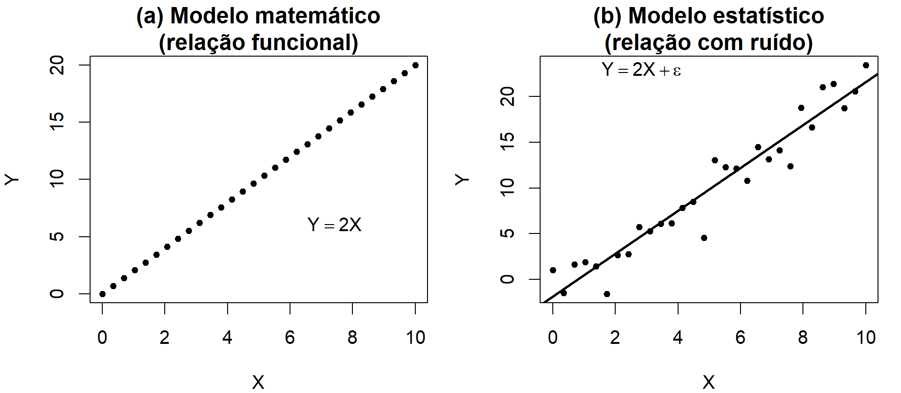
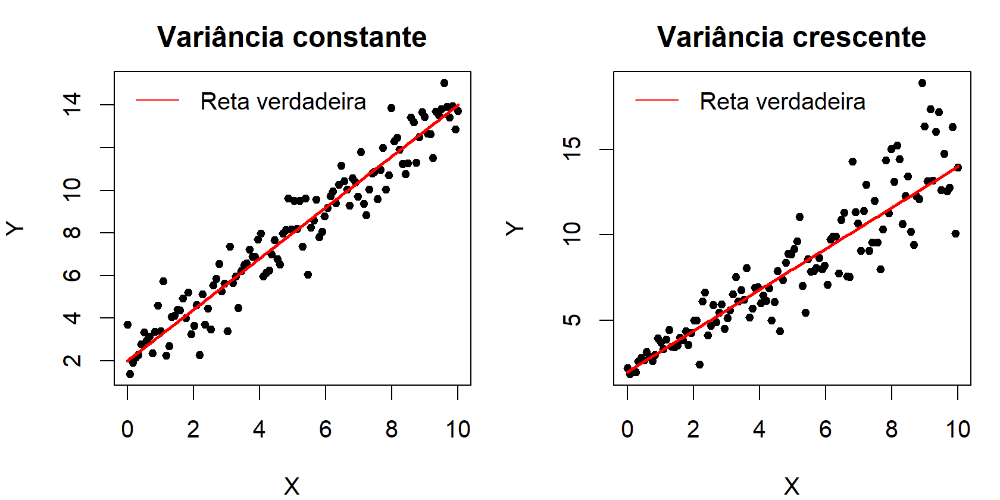
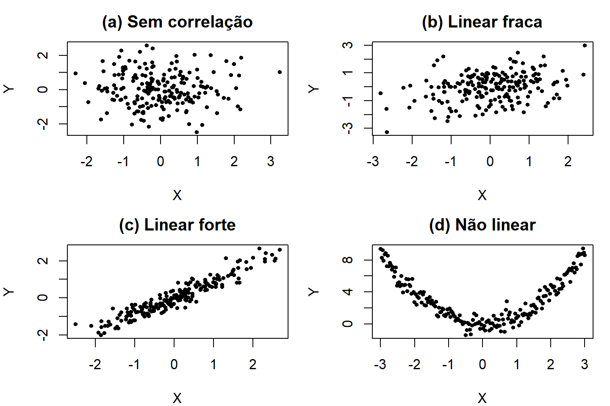
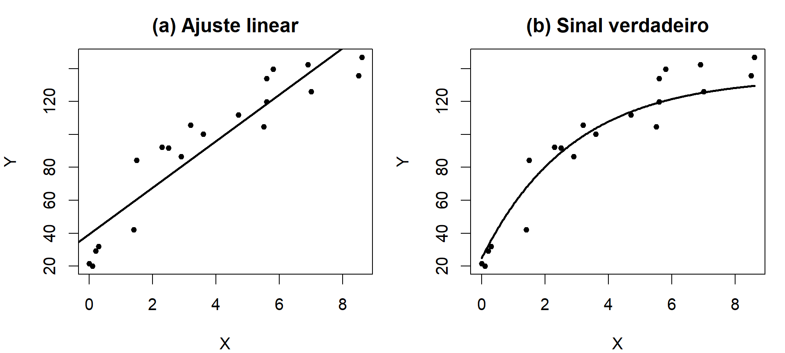
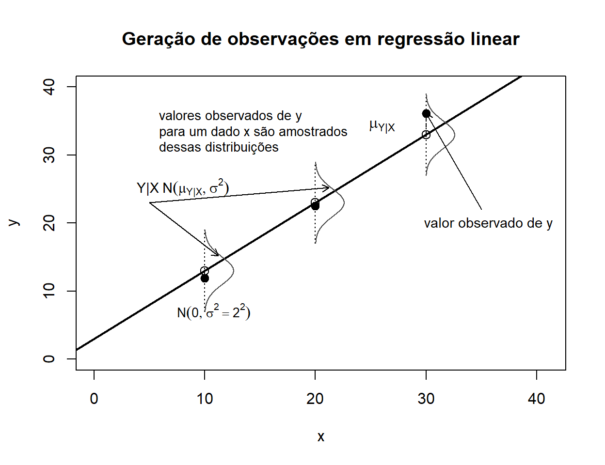

2 Modelagem Estatística e Regressão
2.1 Introdução à Modelagem
Antes de estudarmos a regressão em si, é importante entender que ela faz parte de um campo mais amplo chamado modelagem matemática/estatística. Modelar é o ato de construir representações formais de fenômenos reais com o objetivo de descrevê-los, explicá-los, prever seu comportamento ou orientar decisões.
Em termos conceituais, modelar significa responder à seguinte pergunta:
Como posso representar, de maneira estruturada, um fenômeno complexo do mundo real por meio de variáveis e relações formais?
De forma geral, a modelagem matemática/estatística consiste na tentativa de traduzir um problema do mundo real em termos matemáticos ou estatísticos, estruturando hipóteses, equações e relações que permitam analisar e responder à pergunta proposta. Ela está presente em diversas áreas, como física, química, biologia, economia, engenharia e ciências sociais.
É fundamental compreender que um modelo não é a realidade. Ele é uma aproximação útil. Todo modelo envolve simplificações, suposições e escolhas: quais variáveis considerar, quais ignorar, que tipo de relação assumir, qual grau de precisão é necessário. Assim, modelar é sempre um exercício de equilíbrio entre realismo e simplicidade.
Alguns exemplos de fenômenos que podem ser descritos por modelos matemáticos incluem:
- Crescimento populacional;
- Reações químicas;
- Sistemas mecânicos e eletrônicos;
- Previsão do clima;
- Dinâmica do tráfego e da logística;
- Estratégias econômicas e financeiras;
- Mudanças ambientais e climáticas.
2.1.1 Modelo matemático versus modelo estatístico
Uma distinção conceitual importante é a diferença entre:
- Modelo matemático (determinístico): descreve uma relação funcional exata entre variáveis. Para cada valor de entrada, existe um único valor de saída.
- Modelo estatístico (estocástico): descreve uma relação média ou probabilística, reconhecendo a presença de variabilidade não explicada pelas variáveis observadas.
No modelo determinístico, escreve-se algo como:
\[ Y = 2X \]
Aqui, se \(X=5\), então necessariamente \(Y=10\). Não há variação possível.
Já em um modelo estatístico, reconhecemos que fenômenos reais sofrem influência de fatores não observados, erros de mensuração, flutuações naturais ou variáveis omitidas. Assim, escreve-se:
\[ Y = 2X + \varepsilon, \]
em que \(\varepsilon\) representa a componente aleatória (ruído).
A diferença entre essas duas estruturas pode ser visualizada na simulação abaixo.
Observe que, no modelo estatístico, não buscamos uma igualdade exata, mas uma tendência média em torno da qual os dados se distribuem.
Essa diferença é central para compreender a regressão.
2.1.2 Classificações didáticas de modelos
De forma didática, modelos matemáticos/estatísticos podem ser classificados em:
Determinísticos ou estocásticos (estatísticos)
Dependendo se o acaso está explicitamente presente na formulação.Discretos ou contínuos
Dependendo da natureza das variáveis envolvidas. Contagens são discretas; altura, peso e temperatura são contínuos.Dinâmicos ou estáticos
Dependendo se o tempo é incorporado explicitamente na estrutura do modelo.
Essas classificações são discutidas em livros clássicos de modelagem matemática, como Meerschaert (2013) e Giordano, Fox, e Horton (2013). Elas ajudam a organizar o tipo de pergunta que estamos fazendo e a estrutura matemática adequada para respondê-la.
2.1.3 O ciclo da modelagem
O processo de modelagem geralmente envolve as seguintes etapas:
- Formular a pergunta em termos matemáticos.
- Selecionar uma abordagem de modelagem.
- Construir o modelo com base nas variáveis e hipóteses do problema.
- Resolver o modelo matemático (ou ajustá-lo aos dados, no caso estatístico).
- Interpretar a solução em termos do fenômeno real.
Esse ciclo é iterativo: muitas vezes o modelo precisa ser ajustado ou refinado conforme novas informações surgem. Ao confrontar o modelo com dados, podem surgir questões como:
- A forma funcional escolhida faz sentido?
- Variáveis importantes foram omitidas?
- O comportamento dos resíduos está de acordo com as hipóteses?
- O modelo mantém desempenho em novos dados?
Modelagem não é um procedimento linear; é um processo de aproximações sucessivas.
Além disso, três elementos costumam acompanhar o ciclo de modelagem:
- Estimação ou calibração: ajuste de parâmetros com base em dados observados.
- Validação: verificação da qualidade do ajuste.
- Análise de sensibilidade: avaliação do impacto de pequenas mudanças nas hipóteses ou nos dados.
2.1.4 Exemplos de modelagem
- Problema de otimização: determinar o momento ideal de venda de um animal de criação, considerando ganho de peso, custo de manutenção e preço de mercado.
- Problema de crescimento populacional: prever a evolução da população de um país ou espécie a partir de dados censitários.
Dentro desse panorama mais amplo, a regressão ocupa um papel específico: ela é uma técnica estatística voltada para modelar a média condicional de uma variável resposta em função de variáveis explicativas. Em outras palavras, ela formaliza matematicamente a ideia de que parte da variação observada pode ser explicada sistematicamente, enquanto outra parte permanece como ruído.
Modelagem é, portanto, a linguagem que conecta teoria, dados e inferência. A regressão é uma de suas expressões mais importantes.
2.1.4.1 Exemplos de modelagem em diferentes áreas
A modelagem matemática e estatística é utilizada para descrever e prever o comportamento de fenômenos em uma grande variedade de contextos. Alguns exemplos ilustrativos incluem:
- Epidemiologia: modelos SIR (Susceptíveis–Infectados–Recuperados) para descrever a propagação de doenças infecciosas ao longo do tempo.
- Engenharia de Pesca: relação entre esforço de pesca (dias de mar, número de embarcações) e o estoque pesqueiro disponível.
- Ciência de Dados: previsão da demanda de energia elétrica a partir de temperatura, hora do dia e perfil de consumo.
- Economia: modelos de oferta e demanda que relacionam preços e quantidades em equilíbrio de mercado.
- Climatologia: simulações que conectam emissão de gases de efeito estufa, temperatura média global e regimes de precipitação.
- Educação: análise da relação entre investimento em ensino e desempenho em exames padronizados.
- Oceanografia: modelos que descrevem correntes marinhas em função de gradientes de temperatura e salinidade.
Esses exemplos mostram que modelagem é uma linguagem comum em ciência e tecnologia. A regressão estatística é uma forma particular de modelagem que foca em quantificar relações entre variáveis observáveis, buscando separar o sinal (estrutura determinística) do ruído (componente aleatória).
2.2 Introduçao à Regressão
Regressão é um modelo matemático-estatístico que busca relacionar uma variável resposta (\(Y\)) com uma ou mais variáveis explicativas. De forma conceitual, a regressão parte da ideia de que o comportamento médio de \(Y\) pode ser descrito condicionalmente às variáveis explicativas \(X\).
Em termos mais precisos, o que a regressão modela não é simplesmente \(Y\), mas a média condicional:
\[ E(Y \mid X) \]
Essa perspectiva é central nos textos clássicos de regressão e econometria (Charnet et al. (2008); Hoffmann (2006); Gujarati (2006)). O objetivo não é afirmar que \(X\) determina exatamente \(Y\), mas que existe uma estrutura sistemática média associada às variáveis explicativas.
A ideia fundamental é que a variação observada em um fenômeno pode ser decomposta em duas partes:
- Uma estrutura determinística (ou componente sistemática), que representa o sinal da relação entre as variáveis;
- Uma componente aleatória, representada pelo ruído \(\varepsilon\), que captura variações não explicadas pelo modelo.
Essa decomposição aparece de forma recorrente na literatura de regressão aplicada (Draper e Smith (1998); Kutner et al. (2005); Montgomery, Peck, e Vining (2021)) como a base conceitual do modelo linear.
De forma geral, existem duas representações usuais para essa ideia. - Modelo Aditivo (o mais utilizado):
\[ Y = \mu(X) + \varepsilon \]
- Modelo Multiplicativo (útil em contextos onde a variabilidade é proporcional ao nível médio):
\[ Y = \mu(X) \cdot \varepsilon \]
com:
- \(mu(X)\) → parte determinística (estrutura média);
- \(\varepsilon\) → componente aleatória (ruído), que pode ser aditivo ou multiplicativo.
O sinal \(\mu(X)\) também é denominado de função de regressão.
No modelo aditivo clássico, assume-se que
\[ E(\varepsilon \mid X) = 0, \]
isto é, o erro não carrega informação sistemática adicional sobre \(Y\) além da já contida em \(X\). Essa condição garante que \(E(Y \mid X) = \mu(X)\), permitindo interpretar \(\mu(X)\) como a média condicional de \(Y\) dado \(X\). Essa hipótese é central para a interpretação dos coeficientes como efeitos médios condicionais (Hoffmann (2006); Gujarati (2006)).
No caso do modelo multiplicativo, a condição análoga é \[ E(\varepsilon \mid X) = 1. \]
Nesse caso, temos \(E(Y \mid X) = \mu(X)\,E(\varepsilon \mid X) = \mu(X)\), de modo que \(\mu(X)\) continua representando a média condicional de \(Y\) dado \(X\).
A diferença fundamental entre as duas formulações é estrutural. No modelo aditivo, o erro representa um deslocamento absoluto em torno da média condicional: a variação aleatória soma-se ao valor esperado, produzindo oscilações cuja magnitude, em princípio, não depende do nível médio. Já no modelo multiplicativo, o erro atua como um fator proporcional, ampliando ou reduzindo o valor médio de acordo com sua própria intensidade. Nesse caso, a variabilidade está intrinsecamente ligada ao nível esperado da variável resposta.
Essa distinção tem implicações relevantes. Em estruturas aditivas, concebe-se a variabilidade como relativamente independente da escala do fenômeno; em estruturas multiplicativas, a dispersão tende a crescer ou decrescer proporcionalmente ao valor médio. Fenômenos econômicos, biológicos e ambientais frequentemente apresentam esse comportamento proporcional, por exemplo, renda, produção, crescimento populacional ou biomassa, o que torna a formulação multiplicativa conceitualmente mais adequada em muitos contextos.
A escolha entre uma estrutura aditiva ou multiplicativa envolve considerações teóricas e empíricas. Modelos econômicos frequentemente sugerem relações proporcionais, enquanto a inspeção gráfica dos dados pode revelar padrões de variância crescente. Assim, a definição da forma funcional e da natureza da variação depende da teoria utilizada, da escala de mensuração das variáveis e do comportamento empírico observado nos dados (Gujarati (2006); Hoffmann (2006)).
No caso do modelo aditivo clássico, a hipótese de que o erro não carrega informação sistemática adicional além da contida nas variáveis explicativas é central para a interpretação dos coeficientes como efeitos médios condicionais. Essa perspectiva, segundo a qual a regressão modela a média condicional e não valores individuais, constitui um dos pilares da regressão aplicada e da econometria tradicional (Hoffmann (2006); Gujarati (2006)).
2.2.1 Interpretação conceitual: sinal e ruído
A regressão parte do reconhecimento de que fenômenos reais são influenciados por múltiplos fatores, muitos dos quais não são observáveis ou mensuráveis. Assim, mesmo que exista uma relação estrutural entre \(X\) e \(Y\), os dados observados não estarão perfeitamente alinhados sobre uma curva.
O modelo assume que:
\[ Y = \text{sinal} + \text{ruído} \]
O sinal representa a parte explicável pelas variáveis incluídas no modelo; o ruído representa:
- variáveis omitidas,
- erros de mensuração,
- flutuações naturais,
- fatores aleatórios não controlados.
Essa separação entre componente sistemática e erro é um dos pilares da regressão linear clássica (Draper e Smith (1998)).
2.2.1.1 Exemplo ilustrativo: Sinal + Ruído
A seguir, simulamos um conjunto de dados artificiais para ilustrar a lógica central da regressão: um sinal determinístico mais um componente de ruído.
Considere a relação:
\[ Y = 3 + 2X + \varepsilon, \quad \varepsilon \sim \mathcal{N}(0, 5^2), \]
com \(X \in \{ 1, 2, \dots, 30\}\). A reta \(Y = 3 + 2X\) representa o sinal verdadeiro, enquanto os pontos observados \((X, Y)\) incluem a variabilidade aleatória do ruído \(\varepsilon\).
O gráfico abaixo mostra a dispersão dos dados simulados juntamente com a curva verdadeira. Essa visualização reforça a ideia de que a regressão busca recuperar a estrutura determinística do fenômeno em meio à aleatoriedade introduzida pelos ruídos (erros ou fonte de variação).

2.2.1.2 Exemplo ilustrativo: Sinal + Ruído (homoscedástico vs heteroscedástico)
Neste exemplo, comparamos dois cenários de regressão linear que diferem apenas na dispersão dos ruídos:
- Homoscedástico: a variância dos erros é constante em todos os valores de \(X\). Nesse caso, a nuvem de pontos se distribui de forma aproximadamente uniforme em torno da reta verdadeira, independentemente da posição no eixo \(X\).
- Heteroscedástico: a variância cresce com \(X\). Assim, para valores pequenos de \(X\) os pontos estão mais concentrados, enquanto para valores grandes de \(X\) a dispersão aumenta.
Esse contraste é fundamental: se a homoscedasticidade não for respeitada, os estimadores de mínimos quadrados continuam não viesados, mas deixam de ser eficientes (ou seja, não são os de menor variância). Isso motiva o uso de métodos alternativos, como os mínimos quadrados ponderados (WLS) ou transformações nos dados.

2.2.1.3 Exemplo ilustrativo: Possíbildiades de relações ente X e Y
Observe que nem toda relação entre duas variáveis é linear e forte. Considere algums possibilidades comuns:
- (a) Sem correlação: não existe padrão claro entre \(X\) e \(Y\); conhecer \(X\) não ajuda a prever \(Y\).
- (b) Correlação linear fraca: existe uma tendência positiva, mas com grande dispersão ao redor da reta.
- (c) Correlação linear forte: os pontos seguem de perto uma tendência linear; \(X\) explica grande parte da variabilidade em \(Y\).
- (d) Relação não linear: \(X\) e \(Y\) se relacionam, mas a forma não é bem descrita por uma reta (por exemplo, uma parábola).
Esse exemplo mostra que a correlação linear é apenas um caso particular dentro de uma variedade de possíveis dependências entre variáveis. Por isso, ao analisar dados, é sempre importante, quando possível, visualizar os diagramas de dispersão antes de ajustar um modelo, evitando conclusões equivocadas sobre linearidade.

2.2.1.4 Exemplo ilustrativo: Relação não linear entre \(X\) e \(Y\)
Até agora, discutimos a regressão sob a perspectiva de relações lineares. No entanto, nem todo fenômeno real apresenta comportamento aproximadamente linear. Em muitos contextos, como crescimento biológico, processos de absorção, liberação acumulada de substâncias ou resposta a doses, a relação entre as variáveis pode apresentar curvatura, saturação ou pontos de inflexão.
Neste exemplo, construiremos artificialmente uma base de dados cujo sinal verdadeiro não é linear. O comportamento adotado será do tipo crescimento com saturação: inicialmente, pequenos aumentos em \(X\) produzem grandes aumentos em \(Y\); à medida que \(X\) cresce, o efeito marginal diminui e a curva tende a estabilizar.
Essa estrutura pode ser representada genericamente por uma função do tipo:
\[ Y = f(X) + \varepsilon \]
em que \(f(X)\) é não linear e \(\varepsilon\) representa o componente aleatório.
O objetivo aqui é didático: comparar dois cenários sobre os mesmos dados observados:
- Ajustar um modelo linear, mesmo sabendo que o sinal não é linear;
- Comparar esse ajuste com a curva verdadeira que gerou os dados.
Essa comparação permite visualizar um ponto conceitual central da modelagem:
Um modelo pode estar corretamente estimado sob suas hipóteses e, ainda assim, estar incorretamente especificado.
Ou seja, o problema pode não estar na estimação, mas na forma funcional escolhida.
Ao observar os gráficos, procure refletir:
- O modelo linear captura adequadamente o padrão médio?
- Há evidências visuais de curvatura?
- O erro parece sistemático ao longo de \(X\)?
- O que aconteceria com os resíduos nesse caso?
Esse tipo de análise visual é uma etapa importante antes da formalização do modelo. A regressão linear é uma ferramenta poderosa, mas sua adequação depende da coerência entre a estrutura assumida e o comportamento real dos dados.

2.2.2 Objetivos e Estruturas do Modelo da Regressão
Depois de explorar exemplos visuais de associação entre variáveis, é importante consolidar uma visão mais conceitual sobre a regressão. A regressão não é simplesmente uma técnica de ajuste de curvas; ela é uma estrutura formal para modelar a relação média entre variáveis observáveis.
Em termos conceituais, a regressão procura compreender como o comportamento médio de \(Y\) varia em função de \(X\). Isto é, ela organiza a seguinte pergunta:
Como a variável resposta se comporta, em média, quando as variáveis explicativas variam?
2.2.2.1 Objetivos centrais
A regressão pode ser compreendida a partir de três grandes finalidades:
Explicar
Identificar quais fatores estão associados à variável resposta e quantificar a magnitude dessas associações.Predizer
Utilizar o modelo ajustado para estimar valores futuros ou não observados de \(Y\).Controlar
Avaliar o efeito de uma variável mantendo as demais constantes, permitindo interpretações condicionais.
Esses objetivos aparecem de maneira combinada na prática. Em econometria, frequentemente busca-se compreender relações estruturais entre variáveis macroeconômicas (Gujarati (2006); Hoffmann (2006)). Em engenharia e estatística aplicada, pode haver maior ênfase na capacidade preditiva do modelo (Montgomery, Peck, e Vining (2021)). Em estudos científicos em geral, explicar e prever caminham juntos.
2.2.2.2 Observações conceituais importantes
Antes de avançarmos para a formalização do modelo linear simples, duas observações merecem destaque.
1. Correlação significativa e ajuste linear
Em geral, quando existe correlação linear significativa entre variável explicativa e variável resposta, é razoável esperar que o Modelo de Regressão Linear Simples produza um ajuste satisfatório. Isso ocorre porque a correlação mede o grau de associação linear entre duas variáveis. Se essa associação é forte, a reta ajustada tende a capturar uma parcela substancial da variabilidade observada.
Entretanto, correlação elevada não garante que o modelo esteja corretamente especificado. Pode haver curvatura, variância não constante ou outros padrões estruturais não capturados por uma reta. A inspeção gráfica continua sendo essencial.
2. Associação estatística não implica causa e efeito
Uma relação estatística entre variáveis não implica automaticamente causalidade.Mesmo que um coeficiente estimado seja estatisticamente significativo, isso não significa que uma variável cause a outra. A interpretação causal:
- não pode se basear apenas na amostra considerada;
- deve estar apoiada em teoria ou conhecimento empírico;
- pode exigir desenho experimental ou hipóteses estruturais adicionais.
Exemplos clássicos ilustram essa distinção:
- Despesas de consumo pessoal e renda pessoal disponível — aqui, a teoria econômica sustenta a direção causal.
- Ganho de peso e consumo de calorias — a evidência empírica e experimental apoia a interpretação causal.
Sem essa base teórica ou experimental, a regressão revela associação, não mecanismo causal.
2.2.2.3 Duas características fundamentais do modelo de regressão
Do ponto de vista probabilístico, um modelo de regressão possui duas características essenciais:
Para cada nível fixado de \(X\), existe uma distribuição de probabilidade de \(Y\).
As médias dessas distribuições variam de forma sistemática com \(X\).
Essa segunda característica é o coração da regressão: modelar como a média de \(Y\) se altera quando \(X\) varia.
Visualmente, isso significa que, para cada valor de \(X\), não há um único valor possível de \(Y\), mas sim uma distribuição de valores possíveis. O modelo descreve o comportamento médio dessas distribuições.

Essa perspectiva probabilística será formalizada no próximo capítulo, quando introduzirmos o Modelo de Regressão Linear Simples (MRLS).
2.2.2.4 Estrutura conceitual da regressão
Independentemente da área, a regressão parte de uma ideia fundamental:
\[ Y = \text{parte sistemática} + \text{parte não explicada} \]
A parte sistemática representa o padrão médio associado às variáveis explicativas. A parte não explicada representa variações adicionais que não são capturadas pelo modelo, seja por fatores não observados, limitações de mensuração ou variabilidade inerente ao fenômeno.
A regressão organiza essa decomposição de maneira formal e mensurável. Ela não elimina a variabilidade; ela a estrutura.
2.2.2.5 Alguns exemplos que mostram a importância prática
A utilidade da regressão torna-se mais clara quando observamos aplicações concretas.
Economia
Modelos de regressão são usados para analisar como variáveis como taxa de juros, câmbio e nível de consumo se associam à inflação. O objetivo pode ser compreender o mecanismo econômico (explicação) ou projetar cenários futuros (previsão).Saúde
Em estudos clínicos, a regressão permite avaliar a relação entre tratamento e resposta terapêutica, controlando por idade, sexo ou comorbidades. Aqui, a regressão organiza a comparação entre grupos e ajuda a quantificar diferenças médias.Engenharia
Na modelagem da resistência de materiais, regressões relacionam tensão aplicada e deformação observada, permitindo prever limites operacionais.Esportes
Pode-se modelar o desempenho de uma equipe em função de variáveis como investimento, tempo de posse de bola ou eficiência ofensiva, identificando padrões associados ao resultado final.Pesca e aquicultura
Relações entre esforço de pesca e biomassa capturada, ou entre tempo de cultivo e ganho de peso, podem ser analisadas por regressão para apoiar decisões produtivas.Políticas públicas
Avaliações de impacto utilizam regressão para investigar como programas sociais se associam a indicadores como renda, escolaridade ou emprego.
Esses exemplos mostram que regressão não é apenas um instrumento matemático; é uma ferramenta de organização do raciocínio quantitativo em contextos reais.
2.2.2.6 Potenciais e limites
A regressão possui algumas virtudes que explicam sua ampla utilização:
- Permite quantificar efeitos médios;
- Oferece interpretação relativamente direta dos coeficientes;
- Estrutura a análise de dados de forma sistemática;
- Serve como base para extensões mais sofisticadas.
Ao mesmo tempo, é importante reconhecer que:
- A qualidade da conclusão depende da qualidade dos dados;
- A forma funcional escolhida influencia os resultados;
- Modelos podem ser mal especificados;
- Associação estatística não é automaticamente causalidade.
Reconhecer essas dimensões faz parte da maturidade estatística.
A regressão é, portanto, uma ferramenta que conecta teoria, dados e decisão. Ela organiza a variabilidade observada em uma estrutura interpretável e mensurável.
No próximo capítulo, iniciaremos o estudo formal do Modelo de Regressão Linear Simples (MRLS), que constitui o ponto de partida para compreender, com rigor matemático, como essa estrutura é estimada e quais propriedades possui.